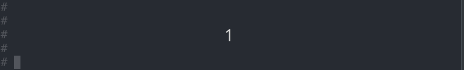
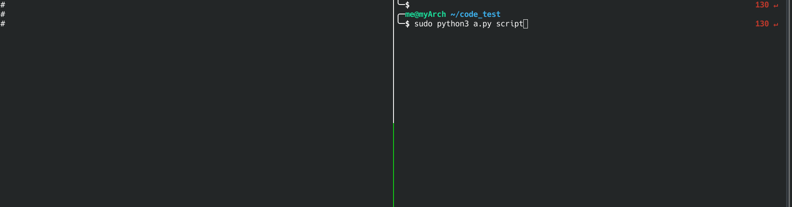

Lab 1 : Hello World¶
Introduction¶
In Lab 0, you already set up the working environment for bare metal programming.
In this lab, you’ll get your hand dirty by implementing a basic shell. You need to set up mini UART and let the host computer and rpi3 communicate through it.
Goals of this lab¶
Practicing bare-metal programming.
Understand how to access rpi3’s peripheral.
Set up mini UART.
Basic initialization¶
The bootloader of rpi3 loads kernel8.img to RAM (address 0x80000) by GPU. After that, 4 CPU cores start to run the same code simultaneously.
The following procedure is suggested to be done for basic initialization.
Let only one core proceed, and let others enter a busy loop.
Initialize the BSS segment.
Set the stack pointer to an appropriate position.
required 1 Implement the 3 basic steps.
question 1 Is it reasonable to accelerate booting speed by parallel programming during the initialization stage?
Mini UART¶
You’ll use UART as a bridge between rpi3 and host computer for all the labs. rpi3 has 2 different UARTs, mini UART and PL011 UART. In this lab, you need to set up mini UART.
required 2 Following UART to set up mini UART.
Simple Shell¶
After setting up UART, you should implement a simple shell to let rpi3 interact with the host computer. The shell should be able to execute the following commands.
command |
Description |
|---|---|
help |
print all available commands |
hello |
print Hello World! |
required 3 Implement a simple shell, it should support the following commands.
elective 1 Write a program or script on your host computer which can read a text file and write the content to rpi3.
Get time¶
Time is an important field for logging. Try to get time by getting core timer counter and frequency from registers CNTFRQ_EL0 and CNTPCT_EL0.
elective 2 Add <timestamp> command, it print current timestamp.
備註
Fraction could be represent by two integer part without using floating point.
Reboot¶
rpi3 doesn’t provide an on board reset button.
You can follow example code to reset your rpi3.
#define PM_PASSWORD 0x5a000000
#define PM_RSTC 0x3F10001c
#define PM_WDOG 0x3F100024
void reset(int tick){ // reboot after watchdog timer expire
set(PM_RSTC, PM_PASSWORD | 0x20); // full reset
set(PM_WDOG, PM_PASSWORD | tick); // number of watchdog tick
}
void cancel_reset() {
set(PM_RSTC, PM_PASSWORD | 0); // full reset
set(PM_WDOG, PM_PASSWORD | 0); // number of watchdog tick
}
elective 3 Add <reboot> command.
備註
This snippet of code only works on real rpi3, not on QEMU.
備註
If you are going to do some operation possibly hang, you can use a long tick reset as a watchdog.
Result¶
 question 2 Point out the difference between bare-metal programming and programming on top of operating system.